https://docs.oracle.com/en/database/oracle/oracle-database/index.html #各版本安装文档
https://blog.csdn.net/qq_38478995/article/details/131334560
Oracle介绍#
Oracle数据库发展史#
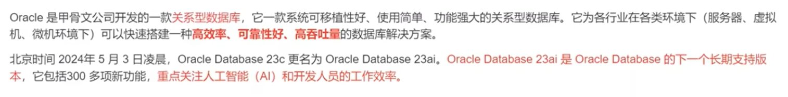
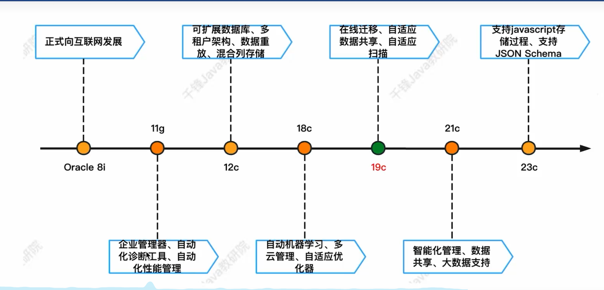
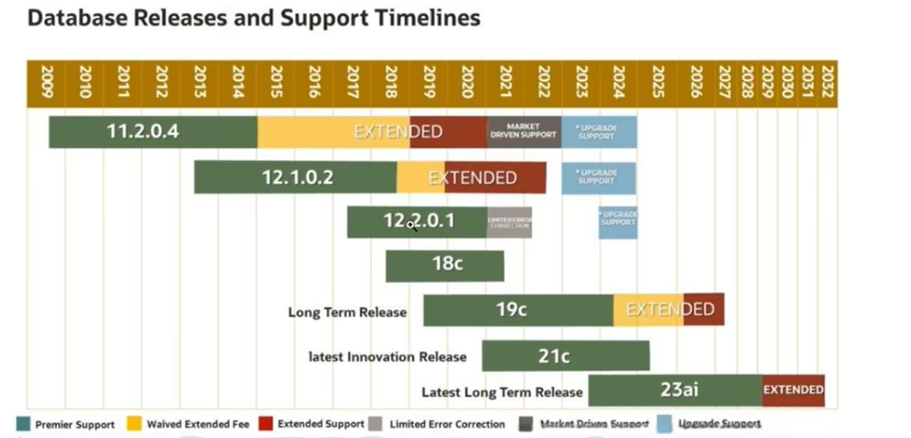
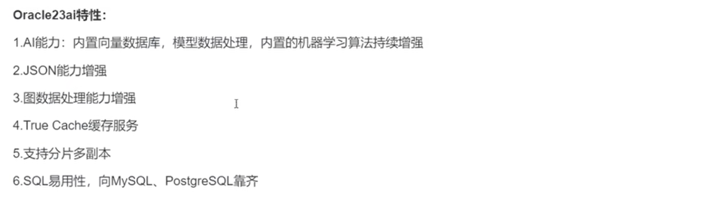
应用场景#
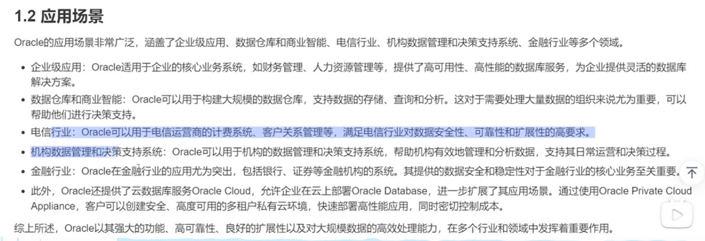
Oracle体系结构#
Oracle数据库实际上是一个数据的物理储存系统，这其中包括数据文件(ora/dbf)、参数文件、控制文件、联机日志等。
-
实例: Orace实例是Oracle数据库系统的一种运行环境，它由一系列的后台进程(Background Processes)和内存结构(Memory Structures)组成。Oracle实例在运行时会占用一定的系统资源(如CPU,内存,和一些后台进程)，而Oracle数据库是存储在实例中的一系列逻辑结构(如表，视图，索引等)
-
数据文件: Oracle数据文件是数据存储的物理单位，数据库的数据是存储在表空间中的。而一个表空间可以由一个或多个数据文件组成，一个数据文件只能属于一个表空间，一旦数据文件被加入到某个表空间后，就不能删除这个文件，如果要删除某个数据文件，只能删除其所属于的表空间才行。
-
表空间: 表空间是Oracle对物理数据库数据文件(ora/dbf)的逻辑映射。一个数据库在逻辑上被划分成一到若干个表空间，每个表空间由同一磁盘上的一个或多个数据文件(datafile)组成，一个数据文件只能属于一个表空间。
-
Oracle用户: 表当中的数据是由Oracle用户放入到表空间当中的，而这些表空间会随机的把数据放入到一个或者多个数据文件当中。Oracle对表数据的管理是通过用户对表的管理去查询，而不是直接对数据文件或表空间进行查询，因为不同用户可以在同一个表空间上面建立相同的表名。但是通过不同的用户管理自己的表数据。
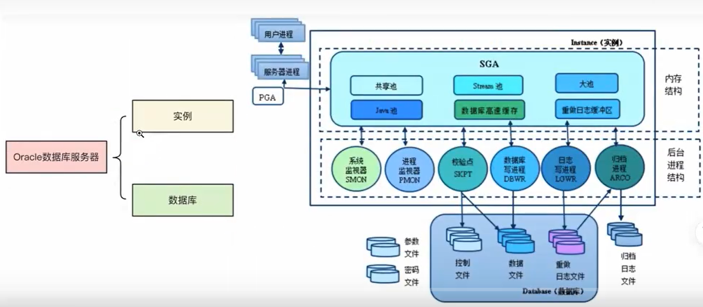
Oracle 逻辑存储结构（逻辑层）#
逻辑存储结构是指 用户如何组织和管理数据 的层次结构。它主要关注的是数据的组织方式，供用户和开发人员操作。
主要组成：
- 表空间（Tablespace）
表空间是逻辑存储结构的最顶层单位。
用来组织和管理数据库中的逻辑对象，比如表（Tables）、索引（Indexes）、视图（Views）等。
每个表空间包含一个或多个数据文件（Datafile）。
Oracle默认创建的表空间有：
SYSTEM（存放数据字典等核心信息）
SYSAUX（辅助系统表空间）
USERS（普通用户对象）
TEMP（临时表空间）
UNDO（事务回滚用）
select tablespace_name from dba_tablespaces; #查看表空间
- 段（Segment）
段是同一类对象的一组存储区域。
每种数据库对象（如表、索引）都有自己的段。
段的种类包括：
-
数据段（Data Segment）：用于存储表或视图的数据。
-
索引段（Index Segment）：用于存储索引的数据。
-
回滚段（Rollback Segment）：用于事务恢复。
每个段由多个区（Extent）组成。
-
区（Extent）
-
区是段里面的一块一块连续的小空间，段是由一个一个的区组合起来的。
-
区是 Oracle 分配给段的基本单位。
-
每次需要增加空间时，Oracle 会给段分配一个新的区（而不是一个一个块分配）。
- 数据块（Data Block）
数据块是 Oracle 逻辑存储结构中最小的单位。
一个数据块通常对应磁盘上的一个物理块。
数据块大小通常是 2KB、4KB、8KB、16KB、32KB（创建数据库时设置的DB_BLOCK_SIZE参数决定）。
一个数据块中可以存储多行表数据，也可能存储一部分索引数据。
show parameter db_block_size #查看当前数据块设置的大小
- 表（Table）
表是数据库中存储结构化数据的基本对象。
一个表在物理存储上对应一个数据段（Data Segment）。
每张表的数据，最终存储在数据块里。
简单的描述
当你创建一张表，Oracle 给这张表分配一个数据段（Data Segment）。
这个段一开始会被分配一个或多个区（Extent）。
随着表中数据越来越多，Oracle 会不断地给这个段追加新的区（一次追加一块或多块）。
每个区内部，是由很多数据块（Data Block）组成的。
可以这么理解
概念 | 比喻 | 说明
段 | 一个仓库 | 整个仓库存放所有货物（比如某张表的所有数据）
区 | 仓库里一块一块的货架 | 仓库是由很多货架组成的，每块货架（Extent）有一定大小，装一部分数据
数据块 | 每块货架上的小盒子 | 货架上放的每一个盒子就是数据块，盒子里存的是表里的数据行
表空间（Tablespace）
└── 段（Segment）
└── 区（Extent）
└── 数据块（Data Block）
└── 实际存储表的数据行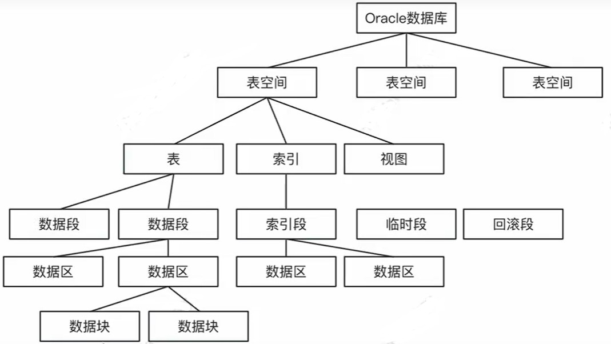
物理存储结构#
物理结构包含的三种数据文件： 控制文件
数据文件
重做日志文件
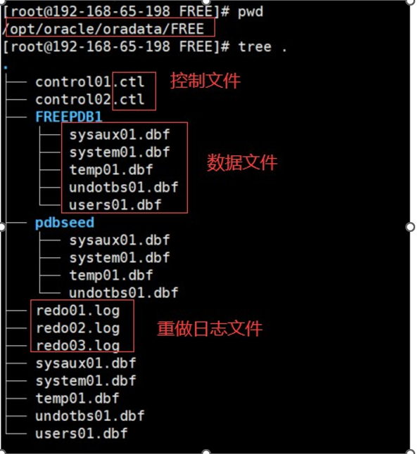
控制文件（.CTL）#
控制文件是oracle的物理文件之一，每个oracle数据库都必须至少有一个控制文件，它记录了数据库的名字、数据文件的位置等信息。在启动数据实例时，oracle会根据初始化参数定位控制文件，然后 oracle会根据控制文件在实例和数据库之间建立关联。控制文件的重要性在于，一旦控制文件损坏，数据库将会无法启动。
控制文件是数据库中最小的文件
控制文件是数据库中最重要的文件
控制文件在数据库创建时被自动创建，并在数据库发生物理变化时会同时更新。
数据文件（包括数据字典）（.DBF）#
数据文件是用来存储实际数据的。一个数据库可以由多个数据文件组成的，数据文件是真正存放数据库数据的。一个数据文件就是一个操作系统文件。数据库的对象(表和索引)物理上是被存放在数据文件中的。当我们要查询一个表的数据的时候，如果该表的数据没有在内存中，那么oracle就要读取该表所在的数据文件，然后把数据存放到内存中。
数据文件和表空间的关系：
一个表空间可以包含几个数据文件
一个数据文件只能对应一个表空间
\
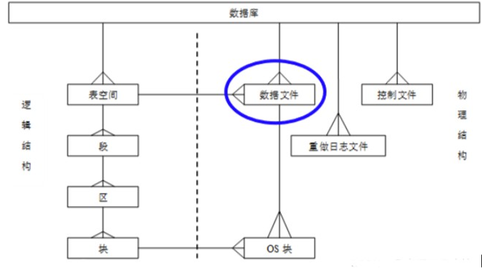
数据文件的种类：
系统数据文件（sysaux01.dbf和system01.dbf）
- 回滚数据文件（undotbs01.dbf）
用户数据文件（users01.dbf）
临时数据文件 （temp01.dbf）
通过下面的语句可以查看当前存在的数据文件和对应的表空间：
select file_name,tablespace_name from dba_data_files;
select file_name,tablespace_name from dba_temp_files;日志文件（.LOG）#
在oracle数据库中，重做日志文件用于记录用户对数据库所做的各种变更操作所引起的数据变化，此时，所产生的操作会先写入重做日志缓冲区，当用户提交一个事务的时候，LGWR进程将与该事务相关的所有重做记录写入重做日志文件，同时生成一个“系统变更数”,scn会和重做记录一起保存到重做日志文件组，以标识与该事务提交成功。如果某个事务提交出现错误，可以通过重做记录找到数据库修改之前的内容，进行数据恢复。
重做日志文件特点：
记录所有的数据变化
提供恢复机制
归档日志文件：是重做日志文件的历史备份
默认情况下，oracle数据库处于非归档日志模式，即当重做日志文件写满的时候，直接覆盖里面的内 容，原先的日志记录不会被写入到归档日志文件中。根据oracle数据库对应的应用系统不同，数据库管理员可以把数据库的日志模式在归档模式和非归档模式之间进行切换。
select dbid,name,log_mode from v$database;可以通过alter database archivelog或noarchivelog语句实现数据库在归档模式与非归档模式之间进行切换。
切换步骤如下：
1.关闭数据库
shutdown immediate;
2.将数据库启动到加载状态
startup mount;
3.改为归档模式
alter database archivelog;
4.重新打开数据库
alter database open;服务器结构#
Oracle服务器主要有以下几部分组成：
- 前台进程
用户进程: 使用SQL Plus连接成功后生成。包含两个重要概念:连接和会话
服务器进程: 处理用户会话过程中的SQL语句和SQL Plus命令
-
程序全局区（PGA)
-
实例
系统全局区（SGA)
后台进程
- 数据库
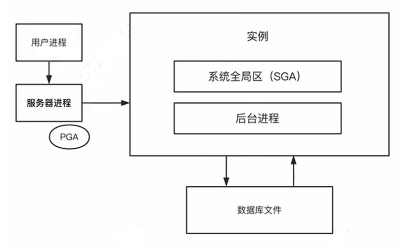
系统全局区SGA#
系统全局区（System Global Area，SGA）是Oracle为系统分配的一组共享的内存结构，可以包含一个数据库实例的数据或控制信息。 在一个数据库实例中，可以有多个用户进程，这些用户进程可以共享系统全局区的数据。SGA是Oracle Instance的基本组成部分，在实例启动时分配。
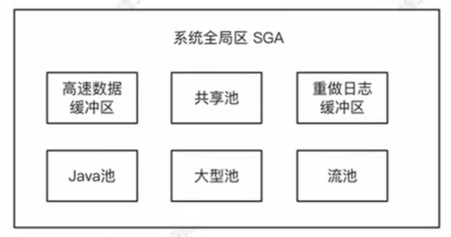
高速数据缓冲区#
作用: 用来存放Oracle系统最近访问过的数据块。
当用户请求数据时，oracle会从高速缓存区中检索，如果检索到了对应的数据块即缓存命中，oracle便会直接从缓存区中读取数据。如果没有命中，oracle的读进程会从数据文件中读取对应的数据块，将对应的数据块加入到缓存区中。
经常或最近被访问的数据块会被放置到高速数据缓冲区的前端，不经常被访问的数据块会被放置到高速数据缓冲区的后端
共享池#
SGA中的共享池（shared pool）是由库高速缓存（library cache）和数据字典高速缓存（data dictionary cache）两部分所组成。服务器进程将SQL或者PL/SQL语句的正文和编译后的代码以及执行计划都放在共享池的库高速缓存中，在进行编译时，服务器进程首先会在共享池中搜索是否有相同的 SQL或者PL/SQL语句，如果有就不进行任何后续的编译处理，而是直接使用已存在的编译后的代码和执行计划。
作用: 存储最近执行过的SQL 语句和最近使用过的数据定义共享池包含:
库高速缓冲区
库高速缓存包含了共享SQL区和共享PL/SQL区两部分，它们分别存放SQL和PL/SQL语句以及相关的信息。
SQL或PL/SQL语句要是能共享的通用代码
因为Oracle是通过比较SQL或PL/SQL语句的正文来决定两个语句是否相同的，只有当两个语句的正文完全相同时，Oracle才能重用已存的编译后的代码和执行计划。如果只是字母大小写不一样，那么字母大小写Oracle会自动转换，而且多余的空格或者制表键Oracle也会自动地压缩。
例如：
SELECT * FROM emp WHERE sal >= 10000;
SELECT * FROM emp WHERE sal >= 12000;上面代码因为SQL语句的不同的，所以不是能共享的，那么我们可以使用通用代码来达到共享；我们可以通过绑定变量的方式：
SELECT * FROM emp WHERE sal >= :g_sal;因为变量不是在编译阶段而是在运行阶段赋值的。
字典高速缓冲区
当Oracle在执行SQL语句时，服务器进程将把数据文件、表、索引、列、用户和其他的数据对象的定义和权限的信息放入数据字典高速缓存。如果在这之后，有用户进程需要同样的信息，如表和列的定义，那么所有的这些信息都将从数据字典高速缓存中获得。
#设置共享池的大小，受限于SGA_MAX_SIZE
ALTER SYSTEM SET SHARED_POOL_SIZE = 250M程序全局区PGA#
程序全局区（Program Global Area, PGA），是服务器进程(server process)使用的一块包含数据和控制信息的内存区域。PGA是非共享的内存,在服务器进程启动或创建时分配(在系统运行时,排序,连接等操作也可能需要进行更进一步的PGA分配),并为server process排他访问。PGA中包含了会话的特定信息，如游标状态、排序和哈希操作的内存，以及用于管理游标共享和会话内内存分配的数据结构。
每个Oracle服务器进程只拥有自己的那部分PGA资源。
Oracle安装#
官方建议生产环境使用Oracle Linux 或 RHEL 系统，以获得最佳支持。
其他linux系统官方不推荐，存在兼容性问题，需要额外配置。
帮助文档
https://docs.oracle.com/en/database/oracle/oracle-database/23/xeinl/index.html #安装文档
https://www.oracle.com/database/free/get-started/ #下载地址
https://yum.oracle.com/oracle-linux-isos.html #oracle linux操作系统下载
安装方式有如下图三种：
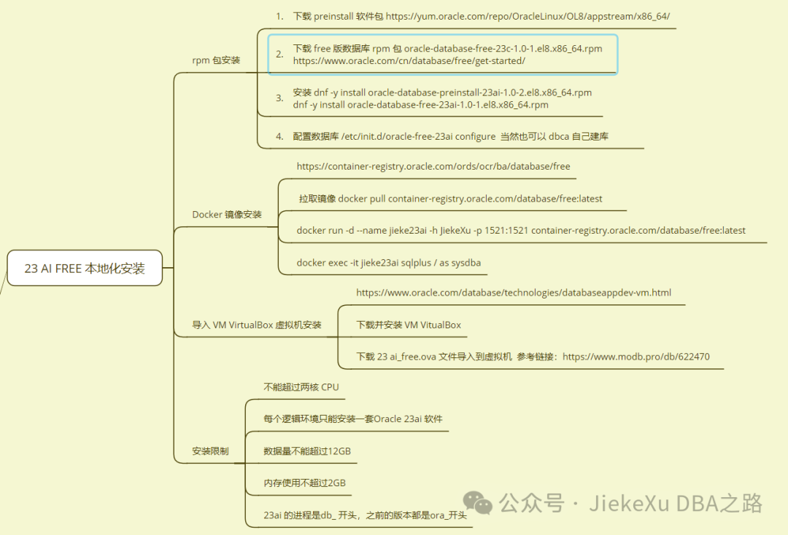
rpm安装#
- 安装oracle linux9虚拟机
https://blog.csdn.net/m0_58805648/article/details/130906027
-
使用root用户安装。
-
安装预安装环境
dnf -y install oracle-database-preinstall-23ai- 下载安装oracle安装包
wget https://download.oracle.com/otn-pub/otn_software/db-free/oracle-database-free-23ai-1.0-1.el9.x86_64.rpm
dnf -y install oracle-database-free-23ai-1.0-1.el9.x86_64.rpm-
创建和配置数据库
-
oracle配置文件（不做修改）
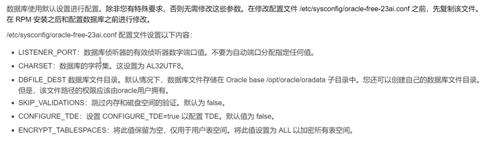
- 初始化数据库
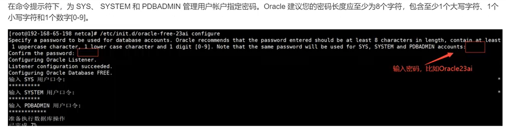
- 登录oracle
#先设置环境变量
[root@localhost ~]# cat <<EOF >>/etc/profile
export ORACLE_HOME=/opt/oracle/product/23ai/dbhomeFree
export ORACLE_SID=Free
export PDB_NAME=FREEPDB1
export NLS_LANG=AMERICAN_AMERICA.AL32UTF8
export NLS_DATE_FORMAT="YYYY-MM-DD HH24:MI:SS"
export LD_LIBRARY_PATH=${ORACLE_HOME}/lib:/lib:/usr/lib
export PATH=${ORACLE_HOME}/bin:${ORACLE_HOME}/OPatch:$OGG_HOME:${PATH}
export HOST=`hostname | cut -f1 -d"."`
export LD_LIBRARY_PATH=$ORACLE_HOME/lib:$ORACLE_HOME/lib32:$OGG_HOME:/lib/usr/lib:/usr/local/lib
# General exports and vars
export PATH=$ORACLE_HOME/bin:$PATH
LSNR=$ORACLE_HOME/bin/lsnrctl
SQLPLUS=$ORACLE_HOME/bin/sqlplus
EOF
[root@localhost ~]# source /etc/profile
[root@localhost ~]# su - oracle
[oracle@localhost]$ sqlplus / as sysdba #以DBA身份登录oracle
SQL*Plus: Release 23.0.0.0.0 - Production on Wed Apr 23 20:47:40 2025
Version 23.7.0.25.01
Copyright (c) 1982, 2025, Oracle. All rights reserved.
???:
Oracle Database 23ai Free Release 23.0.0.0.0 - Develop, Learn, and Run for Free
Version 23.7.0.25.01
SQL> show user;
USER ? "SYS"
SQL>远程连接oracle
[root@localhost ~]# systemctl stop firewalld
[root@localhost ~]# systemctl disable firewalld
#远程连接，需要先关闭防火墙
[root@localhost ~]# sqlplus system/Oracle23ai@192.168.10.100:1521
#连接到默认 PDB:FREEPDB1
[root@localhost ~]# sqlplus system/Oracle23ai@192.168.10.100:1521/FREEPDB1
使用navicat连接oracle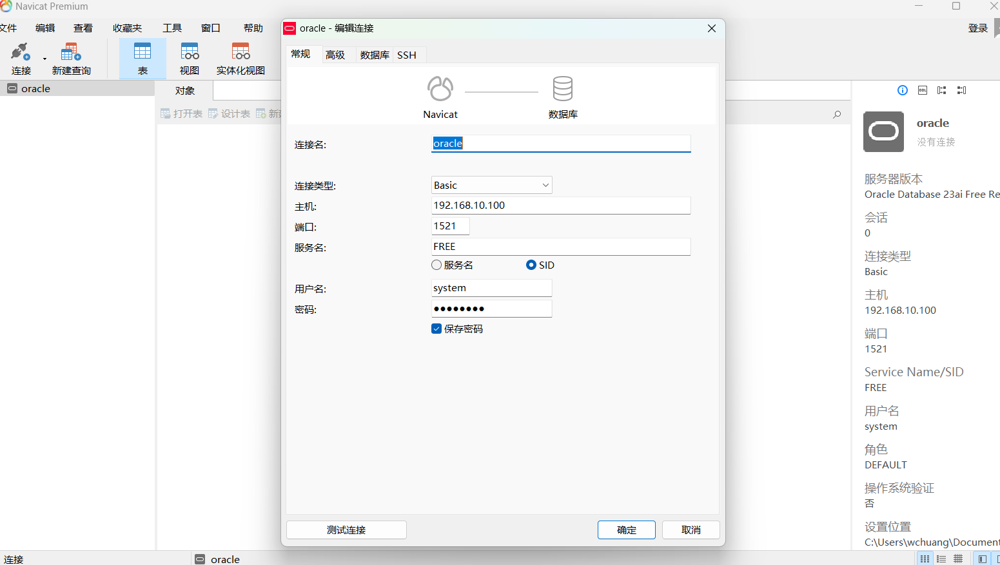
Docker方式安装#
docker pull container-registry.oracle.com/database/free:latest
docker run -d --name myoracle -e ORACLE_PWD=Oracle23ai -p 1521:1521 container-registry.oracle.com/database/free:latest
sqlplus system/Oracle23ai@192.168.10.100:1521
docker exec -it Oracle23ai sqlplus / as sysdba
select instance_name from v$instance; #查询当前连接的数据库实例名称
容器初始化需要时间（约5-10分钟），可通过以下命令检查状态：
docker logs -f Oracle23ai
当看到以下日志表示就绪：
DATABASE IS READY TO USE!
持久化存储建议：
docker run -d \
--name Oracle23ai \
-p 1521:1521 \
-v /path/on/host:/opt/oracle/oradata \
container-registry.oracle.com/database/free:latestVirtualBox oracle安装#
管理oracle#
设置开机自启动#
systemctl daemon-reload
/usr/lib/systemd/systemd-sysv-install enable oracle-free-23ai
/etc/init.d/oracle-free-23ai stop #先把之前方式启动的关闭
systemctl start oracle-free-23ai #再启动
systemctl stop oracle-free-23ai
systemctl restart oracle-free-23ai
lsnrctl status
是 Oracle 数据库中的一个关键命令，用于 检查监听器（Listener）的运行状态和配置信息。监听器是 Oracle 数据库网络服务的核心组件，负责接收客户端连接请求并将其路由到相应的数据库实例。
LSNRCTL for Linux: Version 23.0.0.0.0 - Production on 24-APR-2025 00:54:07
STATUS of the LISTENER
------------------------
Alias LISTENER
Version TNSLSNR for Linux: Version 23.0.0.0.0 - Production
Start Date 23-APR-2025 21:13:22
Uptime 0 days 3 hr. 40 min. 45 sec
Trace Level off
Security ON: Local OS Authentication
SNMP OFF
Default Service FREE
Listener Parameter File /opt/oracle/product/23ai/dbhomeFree/network/admin/listener.ora
Listener Log File /opt/oracle/diag/tnslsnr/localhost/listener/alert/log.xml
Listening Endpoints Summary...
(DESCRIPTION=(ADDRESS=(PROTOCOL=tcp)(HOST=localhost)(PORT=1521))) # 监听本地1521端口
(DESCRIPTION=(ADDRESS=(PROTOCOL=ipc)(KEY=EXTPROC1521))) # IPC通信
Services Summary...
Service "FREE" has 1 instance(s). # CDB 服务
Instance "FREE", status READY, has 1 handler(s) for this service...
Service "FREEXDB" has 1 instance(s). # XML DB 服务
Instance "FREE", status READY, has 1 handler(s) for this service...
Service "freepdb1" has 1 instance(s). # PDB 服务
Instance "FREE", status READY, has 1 handler(s) for this service...Oracle主要文件目录#
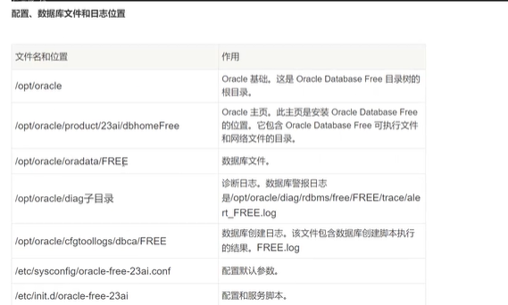
安装Oracle SQL Developer#
https://www.oracle.com/cn/database/sqldeveloper/
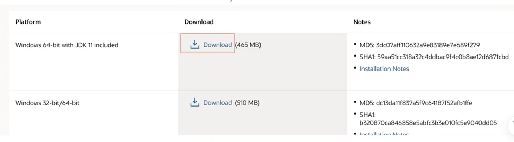
Oracle使用#
用户概念#
-
Oracle用户的概念对于Oracle数据库至关重要，在现实环境当中一个服务器一般只会安装一个Oracle实例，一个 Oracle用户代表着一个用户群体，他们通过该用户登录数据库，进行数据库对象的创建、查询等开发。
-
每一个用户对应着该用户下的N多对象，因此，在实际项目开发过程中，不同的项目组使用不同的Oracle用户进行开发，不相互干扰。也可以理解为一个Oracle用户即是一个业务模块，这些用户群构成一个完整的业务系统，不同模块间的关联可以通过Oracle用户的权限来控制，来获取其它业务模块的数据和操作其它业务模块的某些对象。
总之Oracle里的用户，不只是登录账号，而是一个业务系统的容器，管理着自己的表、程序和数据，多个用户之间通过授权进行数据共享与隔离。
用户模式#
在Oracle数据库中，为了便于管理用户创建的数据库对象(如数据表、索引、视图等)，引入了模式的概念，某个用户创建的数据库对象都属于该用户模式。
在一个模式内部不可以直接访问其他模式的数据库对象，即使在具有访问权限的情况下，也需要指定模式名称才可以访问其他模式的数据库对象。
比如在scott账号下创建的表dept，查询这个表时使用下面的语句：
当在其他用户账号下，比如system账号下，访问dept表时，需要在表名前面加上该表的所属账号
scott；
用户登录数据库#
SQLPlus是 Oracle 默认安装的自带的一个客户端工具。如果Oracle安装在 Windows下，在cmd 命令行中输入 “sqlplus”命令，就能够启动该工具了；如果Oracle安装在Linux系统中，在Linux的命令界面中输入“sqlplus”命令，就能启动该工具。
连接身份代表着改用户连接数据库后享受的权限，oracle 有三种身份如下：
sysdba:数据库管理员身份。权限：打开（关闭）数据库服务器、备份（恢复）数据库、日志功能、会话限制、数据库管理功能等。
sysoper:数据库操作员身份 。权限：打开（关闭）数据库服务器、备份（恢复）数据库、日志功能、会话限制。
normal:普通用户。权限：操作该用户下的数据对象和数据查询，默认的身份是normal用户。
注意:sys用户必须用sysdba才能登陆(使用：sys as sysdba)，system用户(数据库管理员身份，直接使用：system)。
sqlplus登录用户语法：sqlplus username/password@serviceName [ as 连接身份]以系统管理员登录数据库：
切换用户：connect username/password@serviceName [ as 连接身份]
查看当前用户：show user;
SQLPlus令行工具提供了和Oracle数据库交互能力，不仅仅可以连接本地数据库，也可以连接远程数据库。
语法：conn 用户名/密码@服务器连接字符串 as 连接身份(此身份需要解锁)
案例：connect sys/Oracle23ai@192.168.65.198:1521/free as sysdba;
基本概念
CDB——Container Database，即容器数据库；
PDB——Pluggable Database，即可插拔数据库；
公共用户——CDB公共用户，必须以C##或c##开头，Oracle会在每个PDB中同时创建该用户；
本地用户——PDB的用户，本地用户所在PDB中必须是唯一的，每个PDB可以有不同的本地用户；
CDB和PDB是数据库中的两种重要概念。
CDB是一个容器数据库，名称为 CDB$ROOT，其作用就是系统数据库，sys等账号都保存在里面，同时它可以管理PDB数据库。可以容纳多个PDB，类似于一个父容器。在CDB环境中，用户称为公共用户，而在PDB环境中，用户称为本地用户。
PDB是一种可插拔数据库，它可以在CDB中独立地创建、停止和启动。每个PDB都有自己的数据文件、控制文件和日志文件，并且可以独立地进行备份和恢复操作。PDB提供了更高的隔离性和安全性，因为每个PDB都有自己的安全上下文，并且只能通过指定的用户访问。
常用命令
创建用户#
每个用户都有自己的用户名和密码，以及权限和角色，用户访问和管理数据库中的对象。
使用CREATE和DROP来创建和删除用户。用户对它所拥有的对象具有所有的增删改的权限。 可以使用 ALTER USER 命令来修改用户的属性，如密码、默认表空间以及存储配额。
用户可以被授予不同的权限或者角色。
1 sqlplus system/Oracle23ai@free – 连接数据库(管理员角色)
2
3
4 # 在CDB（Container Database）容器中创建用户时，前面必须添加C## ,而PDB（Pluggable Database）数据库不需要加前缀
5 #COMMON USERS(普通用户)：经常建立在CDB层，用户名以C##或c##开头；
6 #LOCAL USERS(本地用户)：仅建立在PDB层，建立的时候得指定CONTAINER。
7
8 #看数据库是否为 CDB
9 select CDB from v$database;
10
11 #创建用户
12 create user C##fox identified by Oracle23ai;
13
14 #配置权限
15 grant dba,connect,resource,create view to C##fox;
16 grant create session to C##fox;
17 grant select any table to C##fox;
18 grant update any table to C##fox;
19 grant insert any table to C##fox;
20 grant delete any table to C##fox;
21
22
23
24 #连接登陆测试
25 conn c##fox/Oracle23ai@free
26
27
28 –修改用户密码、锁定状态
29 alter user c##fox
30 identified by
–修改密码
31 account lock;–修改用户处于锁定状态或者解锁状态 （LOCK|UNLOCK ）
32
33 #删除用户
34 drop user c##fox;
虽然创建了用户，但还不能使用，需要给用户授予数据库角色和设置用户权限。
数据库角色#
Oracle数据库角色是若干系统权限的集合，给Oracle用户进行授数据库角色，就是等于赋予该用户若干数据库系统权限。
常用的数据库角色如下：
CONNECT角色：
CONNECT角色是Oracle用户的基本角色，CONNECT权限代表着用户可以和Oracle服务器进行连接，建立Session（会 话）。
RESOURCE角色：
RESOURCE角色是开发过程中常用的角色。RESOURCE给用户提供了可以创建自己的对象，包括：表、视图、序列、过程、触发器、索引、包、类型等。
DBA角色：
DBA角色是管理数据库管理员该有的角色。它拥护系统了所有权限，和给其他用户授权的权限。 SYSTEM用户就具有DBA权限。
三个数据库角色，对应有三个连接身份。
用户权限#
Oracle数据库用户权限分为：系统权限和对象权限两种。
系统权限：
比如：create session可以和数据库进行连接权限、create table、create view 等具有创建数据库对象权限。
对象权限：
比如：对表中数据进行增删改查操作，拥有数据库对象权限的用户可以对所拥有的对象进行相应的操作。
因此，在实际开发过程当中可以根据需求，把某个角色或系统权限赋予某个用户。
系统权限只能通过DBA用户授权！所以通常用于连接的用户（sqlplus system/Oracle23ai as sysdba; ） 对象权限由拥有该对象权限的对象授权！
数据库角色选择授权一般也只能通过DBA用户授权！（sqlplus system/Oracle23ai as sysdba;） 用户不能自己给自己授权！（所以授权可以统一的：sqlplus system/Oracle23ai as sysdba;）
授权操作
查看用户的权限或角色
取消用户权限
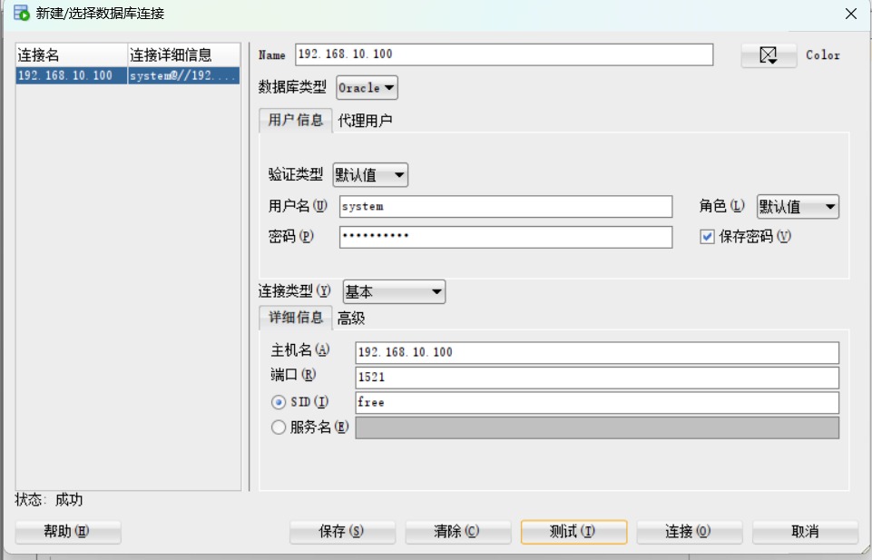
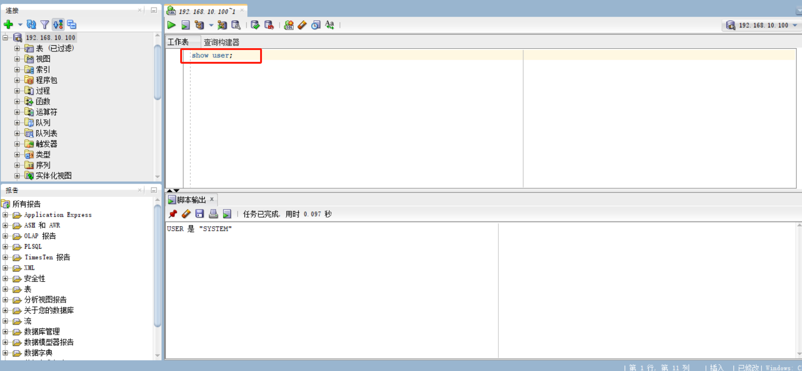